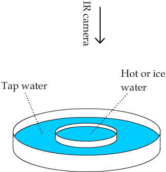
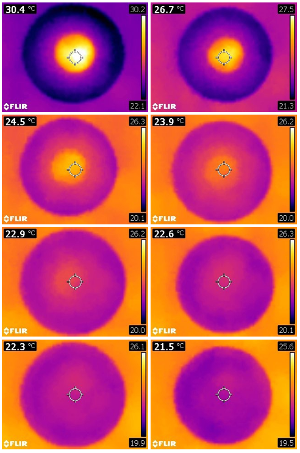
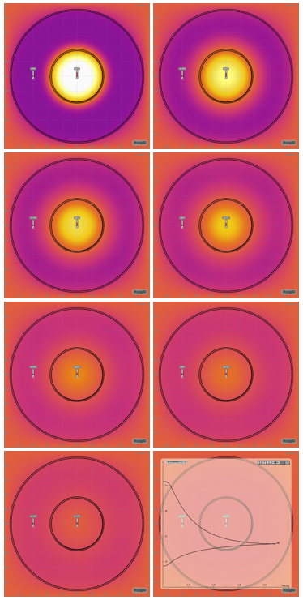
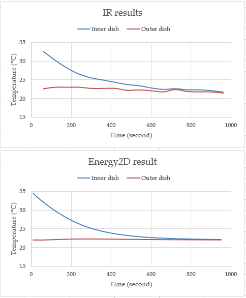

Visualizing thermal equilibration
A nested pair of Petri dishes, a thermal camera, and an Energy2D simulation reveal the complementary strengths of real-world experiments and computational models.
A simple experiment to show thermal equilibration is to put a small Petri dish filled with some hot or cold water into a larger one filled with tap water around room temperature, as illustrated in Figure 1. Then put a thermometer into the inner dish and another into the outer dish, take their readings over time, and observe how they eventually converge.

With a low-cost thermal camera and our Infrared Explorer app, this experiment becomes more visually appealing (Figure 2). As a thermal camera provides a full-field view of the experiment in real time, you get much richer information about the process than a graph of two converging curves from the temperature data measured by the two thermometers.

The complete equilibration process typically takes 10–30 minutes, depending on the initial temperature difference between the water in the two dishes and the amount of water in the inner dish. A larger temperature difference or a larger amount of water in the inner dish requires more time to reach the thermal equilibrium.
Another way to quickly show this process is to use our Energy2D software to create a computer simulation (Figure 3). Such a simulation provides a visualization that resembles the thermal imaging result. The advantage is that a simulation runs very fast — only 10 seconds or so are needed to reach the thermal equilibrium. This allows you to test various conditions rapidly, e.g., changing the initial temperature of the water in the inner dish or the outer dish or changing the diameters of the dishes.

Both real-world experiments and computer simulations have their own pros and cons. Exactly which one to use depends on your situation. As a scientist, I believe nothing beats real-world experiments in supporting authentic science learning and we should always favor them whenever possible. However, conducting real-world experiments requires a lot of time and resources, which makes it impractical to implement throughout a course. Computer simulations provide an alternative solution that allows students to get a sense of real-world experiments without entailing the time and cost. But the downside is that a computer simulation, most of the time, is an overly simplified scientific model that does not have the many layers of complexity and the many types of interactions that we experience in reality. In a real-world experiment, there are always unexpected factors and details that need to be attended to. It is these unexpected factors and details that create genuinely profound and exciting teachable moments. This important nature of science is severely missing in computer simulations, even with a sophisticated computational fluid dynamics tool such as Energy2D.
So, here is my balancing of this trade-off equation: It is essential for students to learn simplified scientific models before they can explore complex real-world situations. The models will give students the frameworks needed to make sense of real-world observation. A fair strategy is to use simulations to teach simplified models and then make some time for students to conduct experiments in the real world and learn how to integrate and apply their knowledge about the models to solve real problems.
You may be wondering how well the simulation result agrees with the experiment result on a quantitative basis. This is kind of an important question — if the simulation is not a good approximation of the real-world process, it is not a good simulation and one may challenge its usefulness, even for learning purposes.

Figure 4 shows a comparison of a test run. As you can see, the while the result predicted by Energy2D agrees in trend with the results observed through thermal imaging, there are some details in the real data that may be caused by either human errors in taking the data or thermal fluctuations in the room. What is more, after the thermal equilibrium was reached, the water in both dishes continued to cool down to room temperature and then below due to evaporative cooling. The cooling to room temperature was modeled in the Energy2D simulation through a thermal coupling to the environment but evaporative cooling was not. This is exactly the problem of simulations — they do not (and cannot) take every factor in the real world into account.
← Back to Infrared Explorer